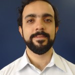

Captamos comemora primeiro aniversário e se prepara para os desafios do futuro
13 de Setembro de 2017 às 06:30
A Captamos completa um ano neste mês. E não faltam motivos para comemorar. Apesar da história ainda breve, a plataforma conseguiu se consolidar como referência de conhecimento sobre o tema mobilização de recursos para causas. Cada vez mais, ela vem sendo usada por diferentes públicos como fonte de informação gratuita e de qualidade, ajudando a suprir uma carência crônica no país: a escassez de conteúdo em língua portuguesa ligado ao assunto.
O Diretor-executivo da Associação Brasileira de Captadores de Recursos (ABCR), João Paulo Vergueiro, assumiu a função de coordenar o projeto. Nesta entrevista ele fala sobre a criação da plataforma, faz um balanço dos primeiros 12 meses e fala sobre os planos para os anos seguintes. Um deles é transformar a iniciativa numa “plataforma de construção coletiva”.
Captamos: Como foi a criação da Captamos?
João Paulo Vergueiro: A Captamos foi criada por iniciativa do Instituto Arapyaú, que reuniu uma série de parceiros. Um deles era a ABCR. No processo de construção do projeto, a associação se apresentou como a organização que poderia sediar e liderar a plataforma. Por isso, ela está encubada na ABCR. Mas isso não tira a característica de a Captamos de ter surgido como projeto próprio, que tem um conselho próprio que dita as prioridades, as metas e a estratégia. Dentro desse conselho, há um membro da ABCR, que é o Victor Graça. Eu, como diretor-executivo da associação, também assumi a coordenação da plataforma. Sou gestor do site e da equipe, e garanto que as estratégias sejam cumpridas e o orçamento, executado.
C: Qual sua trajetória?
JP: Minha formação é em administração pública. Meus primeiros seis anos de experiência profissional foram na prefeitura de São Paulo. Tive a oportunidade de começar no terceiro setor numa ONG que capacitava servidores públicos municipais. Foi onde eu aliei minha formação com o trabalho no terceiro setor. Desde que me juntei à ABCR, em 2009, tenho me dedicado a promover o fortalecimento das organizações e a sustentabilidade do setor.
C: Qual foi a ideia por trás da criação da plataforma?
JP: O Brasil é muito carente de informação. Não há publicações sobre captação de recursos. Não existe muito conteúdo em português e a maioria da população não fala inglês. A proposta da Captamos, desde a sua origem, é ser um centro de conhecimento no tema da captação de recursos e poder oferecer para qualquer um, em qualquer lugar, informação relevante, atualizada e completa sobre mobilização de recursos para causas, algo que não existia no país. A Captamos veio suprir essa carência. Hoje, é uma biblioteca on-line sobre o tema.
C: Além de ser uma difusora de informações, também produz conteúdo? Isso vem desde o princípio?
JP: Sim. A Captamos, num primeiro momento, tem produzido muito mais conteúdo do que tem conseguido gerar espontaneamente. A ideia no futuro é que seja um espaço de geração espontânea de conhecimento, que os próprios captadores queiram colocar seus artigos, seus cases, tirar dúvidas de outros captadores. Para a consolidação da Captamos nesse primeiro ano, tem sido muito forte a necessidade de a gente construir conhecimento e disponibilizá-lo. Isso faz com que a plataforma se torne referência.
C: Você consegue perceber o impacto da Captamos? As pessoas estão acessando?
JP: Consigo, sim, ver a Captamos sendo referência nacional. Vou dar palestras, cursos e, quando falo sobre determinados temas, o pessoal responde que já leu sobre os assuntos na Captamos. As pessoas já viram, já acessaram, já fizeram alguns cursos. Recentemente, revisamos a tradução de uma publicação sobre captação de recursos e, em todos os capítulos, havia links para artigos de referência, e artigos da Captamos entraram nessa plataforma. Soube também que um dos infográficos que fizemos foi analisado por uma empresa que estava querendo lançar um produto sobre o tema dele. A Captamos começa cada vez mais a ser utilizada como fonte de informação e de conteúdo em captação de recursos. Há um trabalho muito grande para fazer a plataforma crescer. Ela precisa ser dez vezes maior, mas começa já a fazer a diferença, possibilitando que pessoas, em qualquer lugar do país, tenham acesso a informações que antes não tinham.
C: A plataforma tem uma característica muito multimídia. Por que vocês decidiram abrir tantas frentes distintas, tantos formatos e com diversos níveis de profundidade?
JP: Para ser uma plataforma completa e que possa oferecer ao usuário a melhor experiência possível. Há pessoas que são mais visuais, aí o infográfico ajuda a fazer com que entendam melhor o conteúdo. Há pessoas que são de leitura, aí o texto ajuda. Tem gente que gosta de interagir com várias ferramentas, e um curso que tenha videoaula, exercício, prova ajuda a consolidar o conhecimento. Tem quem goste de ler a experiência dos outros, e os artigos trazem essa opinião pessoal. Há quem queira caso prático, e os cases ajudam nisso. Há vários tipos de conteúdo que podem, inclusive, ser complementares. O que um artigo fala, um articulista traz com outra abordagem ou um curso traz de forma mais completa. A plataforma não pode ser focada só para um determinado público, ter um único formato.
C: Quem é o público da Captamos?
JP: A Captamos fala com muitos públicos diferentes. Do ponto de vista acadêmico, a plataforma vai ter um papel cada vez mais importante no sentido de ser fonte de informação para Trabalhos de Conclusão de Curso (TCC), para dissertações de mestrado e, eventualmente, para teses de doutorado. Eu sou professor e tenho a oportunidade de interagir com alunos que estão fazendo TCC. Em alguns casos, eles estudaram captação de recursos, e havia poucas fontes nas quais se referenciar. Com a Captamos, se vão abordar algum aspecto específico da captação, por exemplo, diálogo direto ou telemarketing, podem achar conteúdos que vão embasá-los no referencial bibliográfico. Isso não existia de forma tão consolidada. Saindo da universidade, se têm interesse de começar um trabalho como captador de recursos, vão encontrar na Captamos o conhecimento mais básico sobre o tema. Do ponto de vista de quem está na academia ou está começando a trabalhar, a plataforma tem muito conhecimento para ajudar essa pessoa a se inspirar e fazer um trabalho melhor. Dialoga com um público que não é ONG, pois a ideia é que a Captamos fale de captação para causas, e não necessariamente institucionalizada. Como fala de causas, fala com diretores, conselheiros, com empresas que estão ao redor do setor querendo saber mais. Fala também com movimentos, coletivos, grupos não institucionalizados que estão pensando em estratégias para gerar mais recursos para suas iniciativas. Vai falar com institutos empresariais e financiadores. E, no limite, a Captamos fala sobre cultura de doação, pois, de um lado, está tratando da cultura do pedir, para que as organizações, os movimentos e as causas tenham capacidade de se financiar. Do outro, faz com que as pessoas percebam a importância de financiar as causas em que acreditam. E a sustentabilidade das organizações e das causas começa no seu modelo de governança, passa por comunicação, captação, gestão, compliance, transparência. A Captamos aborda tudo isso.
C: Como tem sido o crescimento da plataforma nesse primeiro ano?
JP: Hoje, estamos numa faixa de 6 mil visitas únicas por mês. A meta é chegar a 15 mil nos próximos meses. A ideia é que a Captamos seja acessada pelo país inteiro, descentralizando o acesso às informações, saindo do eixo Rio-São Paulo. Atualmente, temos metade do acesso nesse eixo. A Captamos tem dois mil cadastrados. Queremos chegar a cinco mil. Essas metas são até modestas para o tamanho do setor, mas para uma plataforma que é on-line, sobre conhecimento, que começou do zero há um ano, estamos muito felizes já com os resultados alcançados. Temos seis mil brasileiros que todos os meses acessam a Captamos para buscar conteúdo. Os números mostram que eles ficam em torno de cinco minutos no site. É bastante tempo acessando conteúdo.
C: O acesso atual não representa a distribuição territorial das organizações pelo país. Como aumentar o alcance da plataforma fora do eixo Rio-São Paulo?
JP: Não representa. Apenas cerca de 20% das ONGs estão no estado de São Paulo. Se colocarmos o Rio, dá uns 30%. E 50% dos acessos vêm desses dois lugares. Isso é uma inferência, e não um dado estatístico. Pode ser que existam em São Paulo mais organizações estruturadas em relação ao total do que em estados fora do eixo Rio-São Paulo. A estratégia é investimento em comunicação, conteúdo segmentado, articulistas regionalizados, cases de fora do eixo. Estamos procurando, com o conteúdo da Captamos, trazer mais relevância para quem está fora desse eixo. Queremos que a pessoa olhe para a Captamos e diga “isso que essa organização fez é para mim, posso fazer igual”. É muito comum eu ouvir que algo só funciona em São Paulo ou no Rio, e o mais curioso é que eu ouço isso em todos os estados onde vou. Por quê? Há uma visão de que nesses dois estados existe outro nível de desenvolvimento. No meu ponto de vista, isso não significa que em cada região não dê para aplicar exemplos parecidos de sucesso na captação de recursos. A Captamos quer ajudar a inspirar pessoas e organizações, trazendo casos mais próximos delas. Não só casos de organizações internacionais ou de grandes ONGs.
C: Qual o diagnóstico do primeiro ano? O que funcionou e o que precisa melhorar?
JP: O que funcionou bem é o conteúdo, que não existia em nenhum lugar e que agora está disponível gratuitamente. Os cursos também. As pessoas têm gostado. A Captamos, como proposta de centro de referência, funcionou muito bem. O que estamos trabalhando para evoluir? A comunicação. Estamos muito felizes com o resultado, mas temos de chegar a mais gente. Precisamos melhorar o estímulo à participação do próprio usuário, para que ele tenha vontade de compartilhar suas dicas, tirar suas dúvidas, escrever um artigo. Mantemos ainda uma posição de “a gente produz e vocês consomem”.
C: Isso é quase como transformar a plataforma em uma rede social?
JP: Sem dúvida. Não temos a pretensão de ser um “Facebook da captação de recursos”, mas temos a pretensão de ser uma plataforma de construção coletiva.
C: Quais os planos para os próximos anos?
JP: Evoluir o conteúdo. Trazer mais pessoas de fora do eixo Rio-São Paulo. Aprimorar a tecnologia, há alguns ajustes que precisamos fazer, tornar a Captamos responsiva, estimular o compartilhamento de conteúdo pelos usuários e investir em comunicação para fazer a plataforma crescer, com mídias sociais, Google, newsletter, boletim, vídeos, webinars. Eventualmente, a Captamos talvez faça palestras presenciais fora do Rio de Janeiro e de São Paulo. O objetivo é disseminar o projeto e debater a captação de recursos.
C: Existe uma discussão sobre a profissionalização do terceiro setor no Brasil. Você acha que a Captamos têm um papel de mostrar que a captação de recursos é também uma opção profissional?
JP: Falar no terceiro setor como opção de carreira é algo que eu ouço desde que estava na faculdade, há 17 anos. Há cada vez mais pessoas nas faculdades que querem trabalhar em ONGs, com causas. Porém, isso não é uma opção para a captação de recursos. As pessoas não conhecem a profissão de captador, as faculdades não ensinam a parte de receita das organizações. Quando ensinam sobre ONGs, falam de projeto. É muito raro ver alguém que se forme e fale: "quero ser captador de recursos". Por isso mesmo, a maior parte dos captadores migrou do segundo setor, veio de empresas e foi virar captador por convite ou porque viu a vaga ou foi estudar sobre o tema. Em geral, as pessoas não sabem que a área existe, os jornais não falam sobre isso, não se estuda a captação de recursos, mesmo que seja uma carreira muito promissora.
C: Por que a captação de recursos é tão negligenciada pela mídia e pela academia?
JP: Porque não é a parte legal das ONGs, não é a parte que fala do projeto, do atendimento, de quantas vidas são salvas, quantas famílias são atendidas, quantos idosos são respeitados. Captação de recursos fala de receita. E falar de receita num setor que trabalha com causas é algo muito difícil muitas vezes. Há preconceito, desconfiança. As pessoas acham que pedir é errado. Ensinamos captação de recursos para ensinar o processo de pedir. As ONGs se financiam com doação. Há até esse desconhecimento da sociedade de que a doação é parte do modelo de sustentabilidade das organizações. Tem gente que acha que doação é para quando a ONG está falindo. Na verdade, é um modelo de financiamento no mundo inteiro. Mas há um desconhecimento do setor, e precisamos mudar isso. Não é tão gostoso quanto trabalhar num hospital salvando a vidas das pessoas ou fazendo uma criança feliz.
C: Pedir é uma técnica que pode ser ensinada? A Captamos tenta trabalhar com essa ideia?
JP: Isso é a Captamos: ensinar as ONGs a pedir. O pedido não é o "me dá o dinheiro aí". O pedido é fazer com que a sociedade saiba que você se financia com a doação dela. E como fazer isso? Pedindo no site, na rua, na TV, realizando evento de captação de recursos, vendendo num bazar, fazendo telemarketing, colocando um folheto institucional, gravando um vídeo. O pedir é estratégia, não é o ato “me dá o dinheiro aí". Isso não é captação de recursos. É triste, pois é um setor que sofre muito com este tipo de preconceito de parte da sociedade, de que financiar ONG é errado.
C: E como mudar essa concepção?
JP: Com gestão, profissionalização do setor e transparência. Captação de recursos é o processo de construir vínculos com as pessoas para receber doação. Quando uma pessoa doa para uma ONG, ela o faz porque confia na instituição. O trabalho do captador é manter essa confiança, esse relacionamento, porque se isso se perde, a doação também se perde. Quando a captação de recursos se disseminar e as organizações trabalharem para manter uma relação cada vez mais forte com seus doadores, isso vai promover confiança e vínculos, ajudando a diminuir esse preconceito. Mas não há qualquer grande ação planejada, não há nem recursos para isso, para fazer uma grande campanha do tipo "as ONGs se financiam com doação, confie nas nelas e doe". Não temos essa capacidade no momento.
C: O que uma organização pequena pode aprender com a Captamos?
JP: Acho que a Captamos é hoje mais acessível para uma organização pequena do que para uma grande. Nas maiores, a equipe já está treinada, capacitada e sabe muito do que está na plataforma. Uma pequena vai encontrar aqui conhecimento que ela não sabia sequer que existia. Os dirigentes de uma organização pequena têm de ser abertos o suficiente para saber que precisam investir em captação de recursos. Às vezes, é difícil investir quando se é pequeno. O pontapé tem de ser dado de algum jeito. Seja com um parceiro que vai ajudar, seja com uma campanha para trazer recurso livre, seja com financiador que dá dinheiro só para isso. Se a organização ficar fechada em seu mundo, sem investir em captação, em sua gestão, vai continuar pequena e correndo atrás do mês para fechar. A Captamos tem justamente muitos bons exemplos para inspirar.
C: Há muitos representantes de grandes organizações que participam voluntariamente da Captamos. Qual o significado disso para você?
JP: Mostra como somos generosos no Brasil. Temos uma geração de jovens captadores de recursos que é muito aberta a compartilhar conhecimento e inspirar outros a seguirem seus passos. Temos captadores e consultores no Brasil inteiro escrevendo. É uma geração com uma visão saudável que é a seguinte: farei minha profissão mais forte se houver outras pessoas tão legais quanto eu, que desenvolvam tanto o trabalho quanto eu. Não são fechados, não criam castelos de conhecimento. É uma profissão muito rica, muito generosa e que trabalha para garantir a sustentabilidade das causas. É um setor que tem muito espaço para crescer tanto do ponto de vista dos profissionais quanto da doação.
C: Como a captação de recursos brasileira se compara com o cenário mundial?
JP: O setor está muito melhor hoje do que estava há 10 anos. Estamos conseguindo consolidar a importância de as ONGs pensarem captação de recursos. Ainda há muito amadorismo, mas costumo dizer que a gente cada vez menos tem de explicar o que é captação de recursos e cada vez mais tem de explicar como fazer melhor. Outro exemplo positivo: estão surgindo muitos bons fornecedores que atuam em torno do setor. Empresas de tecnologia, de consultoria, de telemarketing, de captação nas ruas, que oferecem serviços sérios que não existiam há cinco anos. Agora, em relação ao resto do mundo, estamos 20 anos atrás. Nos Estados Unidos e na Inglaterra, não se discute mais a importância da captação: discute-se como garantir a confiança do doador, como captar recursos dentro de uma ética adequada. Aqui, no Brasil, nem os bancos sabem que as ONGs se financiam com doação, não há produto bancário para organizações.
C: A Captamos tem trazido entrevistados de fora do país. Qual a importância de ouvir essas pessoas?
JP: São um exemplo. Quando você ouve uma pessoas que está há 20, 30 anos no setor e viu a experiência e o desenvolvimento lá fora, conseguimos nos inspirar no Brasil a criar nosso modelo, mas aprendendo com os erros e acertos que eles já viveram. É muito importante, principalmente para as organizações mais desenvolvidas, ouvir os captadores lá de fora, pois elas estão na linha de frente e podem vir a cometer os mesmos erros que os outros já cometeram. Quando trazemos pessoas que são referências mundiais em captação de recursos e comunicação, estamos tendo a oportunidade de ampliar o alcance da Captamos para até servir de interesse a essas organizações mais estruturadas.
O Diretor-executivo da Associação Brasileira de Captadores de Recursos (ABCR), João Paulo Vergueiro, assumiu a função de coordenar o projeto. Nesta entrevista ele fala sobre a criação da plataforma, faz um balanço dos primeiros 12 meses e fala sobre os planos para os anos seguintes. Um deles é transformar a iniciativa numa “plataforma de construção coletiva”.
Captamos: Como foi a criação da Captamos?
João Paulo Vergueiro: A Captamos foi criada por iniciativa do Instituto Arapyaú, que reuniu uma série de parceiros. Um deles era a ABCR. No processo de construção do projeto, a associação se apresentou como a organização que poderia sediar e liderar a plataforma. Por isso, ela está encubada na ABCR. Mas isso não tira a característica de a Captamos de ter surgido como projeto próprio, que tem um conselho próprio que dita as prioridades, as metas e a estratégia. Dentro desse conselho, há um membro da ABCR, que é o Victor Graça. Eu, como diretor-executivo da associação, também assumi a coordenação da plataforma. Sou gestor do site e da equipe, e garanto que as estratégias sejam cumpridas e o orçamento, executado.
C: Qual sua trajetória?
JP: Minha formação é em administração pública. Meus primeiros seis anos de experiência profissional foram na prefeitura de São Paulo. Tive a oportunidade de começar no terceiro setor numa ONG que capacitava servidores públicos municipais. Foi onde eu aliei minha formação com o trabalho no terceiro setor. Desde que me juntei à ABCR, em 2009, tenho me dedicado a promover o fortalecimento das organizações e a sustentabilidade do setor.
C: Qual foi a ideia por trás da criação da plataforma?
JP: O Brasil é muito carente de informação. Não há publicações sobre captação de recursos. Não existe muito conteúdo em português e a maioria da população não fala inglês. A proposta da Captamos, desde a sua origem, é ser um centro de conhecimento no tema da captação de recursos e poder oferecer para qualquer um, em qualquer lugar, informação relevante, atualizada e completa sobre mobilização de recursos para causas, algo que não existia no país. A Captamos veio suprir essa carência. Hoje, é uma biblioteca on-line sobre o tema.
C: Além de ser uma difusora de informações, também produz conteúdo? Isso vem desde o princípio?
JP: Sim. A Captamos, num primeiro momento, tem produzido muito mais conteúdo do que tem conseguido gerar espontaneamente. A ideia no futuro é que seja um espaço de geração espontânea de conhecimento, que os próprios captadores queiram colocar seus artigos, seus cases, tirar dúvidas de outros captadores. Para a consolidação da Captamos nesse primeiro ano, tem sido muito forte a necessidade de a gente construir conhecimento e disponibilizá-lo. Isso faz com que a plataforma se torne referência.
C: Você consegue perceber o impacto da Captamos? As pessoas estão acessando?
JP: Consigo, sim, ver a Captamos sendo referência nacional. Vou dar palestras, cursos e, quando falo sobre determinados temas, o pessoal responde que já leu sobre os assuntos na Captamos. As pessoas já viram, já acessaram, já fizeram alguns cursos. Recentemente, revisamos a tradução de uma publicação sobre captação de recursos e, em todos os capítulos, havia links para artigos de referência, e artigos da Captamos entraram nessa plataforma. Soube também que um dos infográficos que fizemos foi analisado por uma empresa que estava querendo lançar um produto sobre o tema dele. A Captamos começa cada vez mais a ser utilizada como fonte de informação e de conteúdo em captação de recursos. Há um trabalho muito grande para fazer a plataforma crescer. Ela precisa ser dez vezes maior, mas começa já a fazer a diferença, possibilitando que pessoas, em qualquer lugar do país, tenham acesso a informações que antes não tinham.
C: A plataforma tem uma característica muito multimídia. Por que vocês decidiram abrir tantas frentes distintas, tantos formatos e com diversos níveis de profundidade?
JP: Para ser uma plataforma completa e que possa oferecer ao usuário a melhor experiência possível. Há pessoas que são mais visuais, aí o infográfico ajuda a fazer com que entendam melhor o conteúdo. Há pessoas que são de leitura, aí o texto ajuda. Tem gente que gosta de interagir com várias ferramentas, e um curso que tenha videoaula, exercício, prova ajuda a consolidar o conhecimento. Tem quem goste de ler a experiência dos outros, e os artigos trazem essa opinião pessoal. Há quem queira caso prático, e os cases ajudam nisso. Há vários tipos de conteúdo que podem, inclusive, ser complementares. O que um artigo fala, um articulista traz com outra abordagem ou um curso traz de forma mais completa. A plataforma não pode ser focada só para um determinado público, ter um único formato.
C: Quem é o público da Captamos?
JP: A Captamos fala com muitos públicos diferentes. Do ponto de vista acadêmico, a plataforma vai ter um papel cada vez mais importante no sentido de ser fonte de informação para Trabalhos de Conclusão de Curso (TCC), para dissertações de mestrado e, eventualmente, para teses de doutorado. Eu sou professor e tenho a oportunidade de interagir com alunos que estão fazendo TCC. Em alguns casos, eles estudaram captação de recursos, e havia poucas fontes nas quais se referenciar. Com a Captamos, se vão abordar algum aspecto específico da captação, por exemplo, diálogo direto ou telemarketing, podem achar conteúdos que vão embasá-los no referencial bibliográfico. Isso não existia de forma tão consolidada. Saindo da universidade, se têm interesse de começar um trabalho como captador de recursos, vão encontrar na Captamos o conhecimento mais básico sobre o tema. Do ponto de vista de quem está na academia ou está começando a trabalhar, a plataforma tem muito conhecimento para ajudar essa pessoa a se inspirar e fazer um trabalho melhor. Dialoga com um público que não é ONG, pois a ideia é que a Captamos fale de captação para causas, e não necessariamente institucionalizada. Como fala de causas, fala com diretores, conselheiros, com empresas que estão ao redor do setor querendo saber mais. Fala também com movimentos, coletivos, grupos não institucionalizados que estão pensando em estratégias para gerar mais recursos para suas iniciativas. Vai falar com institutos empresariais e financiadores. E, no limite, a Captamos fala sobre cultura de doação, pois, de um lado, está tratando da cultura do pedir, para que as organizações, os movimentos e as causas tenham capacidade de se financiar. Do outro, faz com que as pessoas percebam a importância de financiar as causas em que acreditam. E a sustentabilidade das organizações e das causas começa no seu modelo de governança, passa por comunicação, captação, gestão, compliance, transparência. A Captamos aborda tudo isso.
C: Como tem sido o crescimento da plataforma nesse primeiro ano?
JP: Hoje, estamos numa faixa de 6 mil visitas únicas por mês. A meta é chegar a 15 mil nos próximos meses. A ideia é que a Captamos seja acessada pelo país inteiro, descentralizando o acesso às informações, saindo do eixo Rio-São Paulo. Atualmente, temos metade do acesso nesse eixo. A Captamos tem dois mil cadastrados. Queremos chegar a cinco mil. Essas metas são até modestas para o tamanho do setor, mas para uma plataforma que é on-line, sobre conhecimento, que começou do zero há um ano, estamos muito felizes já com os resultados alcançados. Temos seis mil brasileiros que todos os meses acessam a Captamos para buscar conteúdo. Os números mostram que eles ficam em torno de cinco minutos no site. É bastante tempo acessando conteúdo.
C: O acesso atual não representa a distribuição territorial das organizações pelo país. Como aumentar o alcance da plataforma fora do eixo Rio-São Paulo?
JP: Não representa. Apenas cerca de 20% das ONGs estão no estado de São Paulo. Se colocarmos o Rio, dá uns 30%. E 50% dos acessos vêm desses dois lugares. Isso é uma inferência, e não um dado estatístico. Pode ser que existam em São Paulo mais organizações estruturadas em relação ao total do que em estados fora do eixo Rio-São Paulo. A estratégia é investimento em comunicação, conteúdo segmentado, articulistas regionalizados, cases de fora do eixo. Estamos procurando, com o conteúdo da Captamos, trazer mais relevância para quem está fora desse eixo. Queremos que a pessoa olhe para a Captamos e diga “isso que essa organização fez é para mim, posso fazer igual”. É muito comum eu ouvir que algo só funciona em São Paulo ou no Rio, e o mais curioso é que eu ouço isso em todos os estados onde vou. Por quê? Há uma visão de que nesses dois estados existe outro nível de desenvolvimento. No meu ponto de vista, isso não significa que em cada região não dê para aplicar exemplos parecidos de sucesso na captação de recursos. A Captamos quer ajudar a inspirar pessoas e organizações, trazendo casos mais próximos delas. Não só casos de organizações internacionais ou de grandes ONGs.
C: Qual o diagnóstico do primeiro ano? O que funcionou e o que precisa melhorar?
JP: O que funcionou bem é o conteúdo, que não existia em nenhum lugar e que agora está disponível gratuitamente. Os cursos também. As pessoas têm gostado. A Captamos, como proposta de centro de referência, funcionou muito bem. O que estamos trabalhando para evoluir? A comunicação. Estamos muito felizes com o resultado, mas temos de chegar a mais gente. Precisamos melhorar o estímulo à participação do próprio usuário, para que ele tenha vontade de compartilhar suas dicas, tirar suas dúvidas, escrever um artigo. Mantemos ainda uma posição de “a gente produz e vocês consomem”.
C: Isso é quase como transformar a plataforma em uma rede social?
JP: Sem dúvida. Não temos a pretensão de ser um “Facebook da captação de recursos”, mas temos a pretensão de ser uma plataforma de construção coletiva.
C: Quais os planos para os próximos anos?
JP: Evoluir o conteúdo. Trazer mais pessoas de fora do eixo Rio-São Paulo. Aprimorar a tecnologia, há alguns ajustes que precisamos fazer, tornar a Captamos responsiva, estimular o compartilhamento de conteúdo pelos usuários e investir em comunicação para fazer a plataforma crescer, com mídias sociais, Google, newsletter, boletim, vídeos, webinars. Eventualmente, a Captamos talvez faça palestras presenciais fora do Rio de Janeiro e de São Paulo. O objetivo é disseminar o projeto e debater a captação de recursos.
C: Existe uma discussão sobre a profissionalização do terceiro setor no Brasil. Você acha que a Captamos têm um papel de mostrar que a captação de recursos é também uma opção profissional?
JP: Falar no terceiro setor como opção de carreira é algo que eu ouço desde que estava na faculdade, há 17 anos. Há cada vez mais pessoas nas faculdades que querem trabalhar em ONGs, com causas. Porém, isso não é uma opção para a captação de recursos. As pessoas não conhecem a profissão de captador, as faculdades não ensinam a parte de receita das organizações. Quando ensinam sobre ONGs, falam de projeto. É muito raro ver alguém que se forme e fale: "quero ser captador de recursos". Por isso mesmo, a maior parte dos captadores migrou do segundo setor, veio de empresas e foi virar captador por convite ou porque viu a vaga ou foi estudar sobre o tema. Em geral, as pessoas não sabem que a área existe, os jornais não falam sobre isso, não se estuda a captação de recursos, mesmo que seja uma carreira muito promissora.
C: Por que a captação de recursos é tão negligenciada pela mídia e pela academia?
JP: Porque não é a parte legal das ONGs, não é a parte que fala do projeto, do atendimento, de quantas vidas são salvas, quantas famílias são atendidas, quantos idosos são respeitados. Captação de recursos fala de receita. E falar de receita num setor que trabalha com causas é algo muito difícil muitas vezes. Há preconceito, desconfiança. As pessoas acham que pedir é errado. Ensinamos captação de recursos para ensinar o processo de pedir. As ONGs se financiam com doação. Há até esse desconhecimento da sociedade de que a doação é parte do modelo de sustentabilidade das organizações. Tem gente que acha que doação é para quando a ONG está falindo. Na verdade, é um modelo de financiamento no mundo inteiro. Mas há um desconhecimento do setor, e precisamos mudar isso. Não é tão gostoso quanto trabalhar num hospital salvando a vidas das pessoas ou fazendo uma criança feliz.
C: Pedir é uma técnica que pode ser ensinada? A Captamos tenta trabalhar com essa ideia?
JP: Isso é a Captamos: ensinar as ONGs a pedir. O pedido não é o "me dá o dinheiro aí". O pedido é fazer com que a sociedade saiba que você se financia com a doação dela. E como fazer isso? Pedindo no site, na rua, na TV, realizando evento de captação de recursos, vendendo num bazar, fazendo telemarketing, colocando um folheto institucional, gravando um vídeo. O pedir é estratégia, não é o ato “me dá o dinheiro aí". Isso não é captação de recursos. É triste, pois é um setor que sofre muito com este tipo de preconceito de parte da sociedade, de que financiar ONG é errado.
C: E como mudar essa concepção?
JP: Com gestão, profissionalização do setor e transparência. Captação de recursos é o processo de construir vínculos com as pessoas para receber doação. Quando uma pessoa doa para uma ONG, ela o faz porque confia na instituição. O trabalho do captador é manter essa confiança, esse relacionamento, porque se isso se perde, a doação também se perde. Quando a captação de recursos se disseminar e as organizações trabalharem para manter uma relação cada vez mais forte com seus doadores, isso vai promover confiança e vínculos, ajudando a diminuir esse preconceito. Mas não há qualquer grande ação planejada, não há nem recursos para isso, para fazer uma grande campanha do tipo "as ONGs se financiam com doação, confie nas nelas e doe". Não temos essa capacidade no momento.
C: O que uma organização pequena pode aprender com a Captamos?
JP: Acho que a Captamos é hoje mais acessível para uma organização pequena do que para uma grande. Nas maiores, a equipe já está treinada, capacitada e sabe muito do que está na plataforma. Uma pequena vai encontrar aqui conhecimento que ela não sabia sequer que existia. Os dirigentes de uma organização pequena têm de ser abertos o suficiente para saber que precisam investir em captação de recursos. Às vezes, é difícil investir quando se é pequeno. O pontapé tem de ser dado de algum jeito. Seja com um parceiro que vai ajudar, seja com uma campanha para trazer recurso livre, seja com financiador que dá dinheiro só para isso. Se a organização ficar fechada em seu mundo, sem investir em captação, em sua gestão, vai continuar pequena e correndo atrás do mês para fechar. A Captamos tem justamente muitos bons exemplos para inspirar.
C: Há muitos representantes de grandes organizações que participam voluntariamente da Captamos. Qual o significado disso para você?
JP: Mostra como somos generosos no Brasil. Temos uma geração de jovens captadores de recursos que é muito aberta a compartilhar conhecimento e inspirar outros a seguirem seus passos. Temos captadores e consultores no Brasil inteiro escrevendo. É uma geração com uma visão saudável que é a seguinte: farei minha profissão mais forte se houver outras pessoas tão legais quanto eu, que desenvolvam tanto o trabalho quanto eu. Não são fechados, não criam castelos de conhecimento. É uma profissão muito rica, muito generosa e que trabalha para garantir a sustentabilidade das causas. É um setor que tem muito espaço para crescer tanto do ponto de vista dos profissionais quanto da doação.
C: Como a captação de recursos brasileira se compara com o cenário mundial?
JP: O setor está muito melhor hoje do que estava há 10 anos. Estamos conseguindo consolidar a importância de as ONGs pensarem captação de recursos. Ainda há muito amadorismo, mas costumo dizer que a gente cada vez menos tem de explicar o que é captação de recursos e cada vez mais tem de explicar como fazer melhor. Outro exemplo positivo: estão surgindo muitos bons fornecedores que atuam em torno do setor. Empresas de tecnologia, de consultoria, de telemarketing, de captação nas ruas, que oferecem serviços sérios que não existiam há cinco anos. Agora, em relação ao resto do mundo, estamos 20 anos atrás. Nos Estados Unidos e na Inglaterra, não se discute mais a importância da captação: discute-se como garantir a confiança do doador, como captar recursos dentro de uma ética adequada. Aqui, no Brasil, nem os bancos sabem que as ONGs se financiam com doação, não há produto bancário para organizações.
C: A Captamos tem trazido entrevistados de fora do país. Qual a importância de ouvir essas pessoas?
JP: São um exemplo. Quando você ouve uma pessoas que está há 20, 30 anos no setor e viu a experiência e o desenvolvimento lá fora, conseguimos nos inspirar no Brasil a criar nosso modelo, mas aprendendo com os erros e acertos que eles já viveram. É muito importante, principalmente para as organizações mais desenvolvidas, ouvir os captadores lá de fora, pois elas estão na linha de frente e podem vir a cometer os mesmos erros que os outros já cometeram. Quando trazemos pessoas que são referências mundiais em captação de recursos e comunicação, estamos tendo a oportunidade de ampliar o alcance da Captamos para até servir de interesse a essas organizações mais estruturadas.

João Paulo Vergueiro,
Diretor-executivo da ABCR e
Coordenador Geral da Captamos
João Paulo Vergueiro,
Diretor-executivo da ABCR e
Coordenador Geral da Captamos
Notícias mais populares
Gestão
Em agosto de 2017, a revista ÉPOCA e o Instituto Doar divulgaram a primeira ediç&...
Contexto e tendências
Criado para tornar mais transparentes as parcerias entre a administração públic...
Profissional captador
A captação de recursos é fundamental para a sustentabilidade de uma organiza&cc...